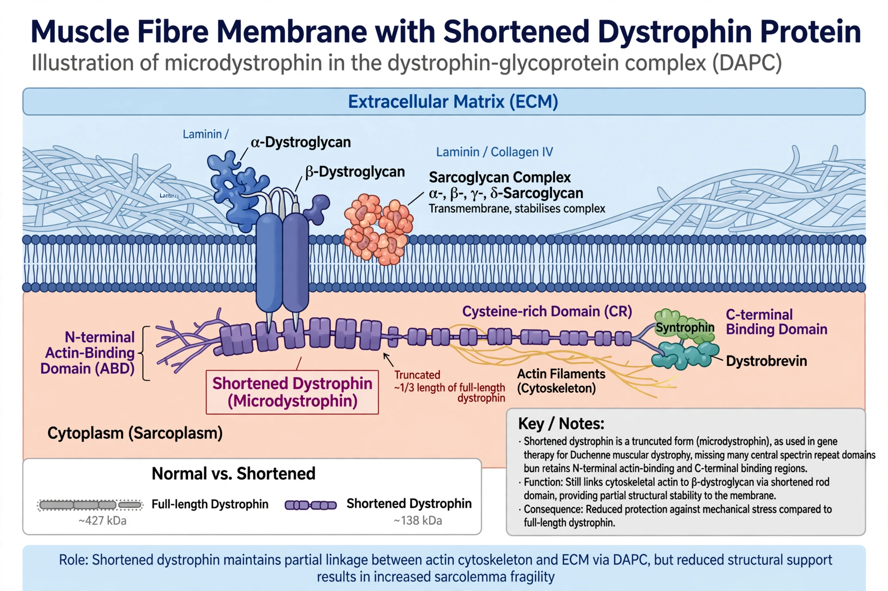

Becker muscular dystrophy

Becker muscular dystrophy (BMD) is an X-linked recessive inherited disorder characterised by slowly progressive muscle weakness of the legs and pelvis. It is caused by mutations in the DMD gene that produce a partially functional, shortened version of the protein dystrophin — the same gene responsible for the more severe Duchenne muscular dystrophy, in which dystrophin is essentially absent. It is named after the German physician Peter Emil Becker, who described it in the 1950s.
| Specialty | Neurology, medical genetics |
|---|---|
| Symptoms | Progressive proximal muscle weakness, calf pseudohypertrophy, cardiomyopathy |
| Onset | Usually childhood to adolescence (5–15 years), sometimes later |
| Cause | Mutations in the DMD gene (Xp21) |
| Frequency | c. 3–6 per 100,000 male births |
Signs and symptoms
Symptoms typically appear later and progress more slowly than in Duchenne dystrophy. Boys may be slow runners, have difficulty climbing stairs, and develop enlargement of the calf muscles (pseudohypertrophy). Weakness spreads to the shoulders and arms; most patients remain able to walk into their forties or beyond, though some need a wheelchair earlier. Dilated cardiomyopathy is common and may be the dominant problem even when skeletal weakness is mild; female carriers can also be affected, usually mildly.
Diagnosis and treatment
Diagnosis rests on elevated creatine kinase, genetic testing of the DMD gene (typically deletions that keep the reading frame intact, unlike most Duchenne mutations), and, where needed, muscle biopsy showing reduced dystrophin of abnormal size. There is no cure; management is supportive — physiotherapy, corticosteroids in some cases, cardiac surveillance and treatment of heart failure, and respiratory support in advanced disease. With modern cardiac care, many patients live into middle or old age.